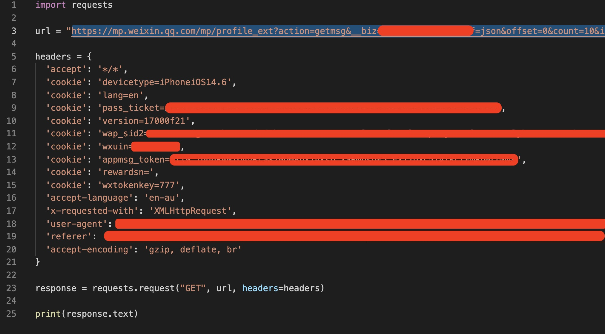

WechatArticles proxy interception & PDF export
Originally named as "微信公众号索引历史文章并打印为PDF".---
缘起
微信公众号改版后,mobile客户端不再提供历史文章合集页面,翻看历史文章很不方便:
- 既不能够按照时间顺序索引,每次都要点击进入公众号主页,多次加载后才能看到最早的文章信息
- 想离线保存,并没有成熟的应用流程能够完成记录微信公众号并归档的工作.
尝试过"智能文档助手"等方法均不理想.决定自己动手实践,同时温故基本Python知识.
思路
整体思路
- 目标: 指定微信公众号,遍历索引所有历史文章,标题对应微信链接形成索引目录
WechatOfficialAccountName.txt,对目录中每一篇微信文章,生成时间_标题.pdf.
- P1: 爬虫模块 - 通过正常API请求,获得指定腾讯公众号所有历史信息,形成可以供P2读取的索引文件
- 用户接口未暴露,需要抓包分析,自己替换参数,构造请求
- 构造请求后,需要考虑腾讯的反异常请求规则,避免封号
- P2: 打印/文件生成模块 - 遍历爬虫模块生成的索引,依次访问url,依照命名规则生成pdf.
实践记录
前人记录探究
- P2思路:
- python调用成熟的lib解决html到pdf的方案有很多.pdfkit是python对于wkhtmltopdf的封装.
brew install --cask wkhtmltopdf - 接着开始查看微信公众号抓包的已有实践,验证思路: https://github.com/efonfighting/efonmark-wechat-spider
- P1思路:
- 通过抓包工具,分析微信公众号正常HTTP(s)获取历史文章的request请求参数和响应结构
- 调整/注入参数,构造自己所需HTTP(s)请求,获取response后,摘取所需的文章url,保存待用
- 将上述获得的url链接遍历处理,调用P2模块,依照命名规则生成pdf
- python调用成熟的lib解决html到pdf的方案有很多.pdfkit是python对于wkhtmltopdf的封装.
实践
- 由于已经很久没有碰python,所以这里从新记录一下python环境配置
- 为避免python包依赖耦合管理混乱,bin的python版本过多等问题,需要配置python虚拟环境.从而每一个工程都能迅速编译,不必花精力处理依赖和版本兼容问题 https://packaging.python.org/guides/installing-using-pip-and-virtual-environments/
- MAC下命令为
brew install python@3.8#安装python3python3 -m pip install --user --upgrade pip#升级pippython3 -m pip install --user virtualenv#安装virtualenvpython3 -m venv env- 这样就可以通过
source env/bin/activate和deactivate来控制对工程环境,以及依赖管理
- python的虚拟环境配置完后,开始阅读https://github.com/efonfighting/efonmark-wechat-spider 发现需要抓包,mac下Fiddler的替代品Charles,在数码荔枝商城购买正版.
- 配置iOS Wifi代理为MAC_IP:8888, 在chls.pro/ssl下载证书后,根据提示,新的iOS把证书的安装放在了Setting App的上方,安装完毕后,进入Certificate Trust Setting,启用我们的Charles代理服务器根证书, 否则会导致HTTPs流量无法解析,页面超时.
- 当iOS配置好后,启动Charles.却发现wechat在这时只能捕获微信公众号具体文章页面的request,无论怎么刷新,请求一直不在Charles中出现. 这是碰见的第一个坑.
- 开始怀疑是配置的问题,但iPhone上Safari的HTTPs请求是可以正常解析的
- 进一步怀疑是腾讯自己定义了protocol,或者没有走443端口
- 以上的两个结论都不正确,正确的结论是某些特定的App即使在设置了proxy的情况下,依然不会通过proxy处理部分请求,参看 4. 结论/反思/问题 中的第一条
- iPhone上抓包的努力失败,思考了一下,回忆起MAC版的Wechat也可以阅读微信文章,可以考虑一试.
- 进入Mac版的Wechat,通过公众号链接打开历史文章页面.请求如下
` GET https://mp.weixin.qq.com/mp/profile_ext? action=getmsg //获取历史信息操作 &__biz= codebase64encoded &f=json &offset=0 // 文章游标 &count=10 &is_ok=1 &scene=124 &uin=MzMzMDczNDU%3D &key= secret_key // 令牌? &passticket=secretkey // 令牌? &wxtoken= &appmsgtoken=secretkey // 令牌? &x5=0 &f=json"`
- 除此外,还有在请求头中包含的referer和cookie需要记录
- 用Postman可省去手动一个个复制编辑参数进行构造的麻烦.复制所有请求头,并且bulk edit,再导出为python脚本,这样不用自己手动复制粘贴请求.
- 对于我们抓取特定公众号的历史文章来说,只需要替换掉offset这个参数,并在token过期或失效时刷新获取referer,cookie以及请求地址即可
- 这样参考原始请求,修改参数,用代码构造一个完整的新请求 
- 根据response的index,循环构造新请求,直至
has_next=0
- 在前人的示例中,作者用单线程循环,抓取了整个历史文章列表,这样做是有很高风险的. 参考4. 结论/反思/问题第二条.
- 在P1的爬取工作结束以后,我们就能够获得一个结构如下的txt文档.将此文档当做P2部分输入,测试后发现两个问题:
- 直接使用pdfkit时,会让公众号的图片丢失
- 前人的方法,是先预处理html,并将其中的image下载下来,然后依照依次替换的方法,在生成pdf时,用下载下来的本地image替换链接,达到高清的效果
- 在新版本的wkhtmltopdf中引用本地资源(如image)生成pdf时,需要额外添加--enable-local-file-access 参数,否则会报错.
结论/反思/问题
- 为什么有的App的Https请求即使配置了proxy以后,仍然不可见 https://www.cnblogs.com/lulianqi/p/11380794.html
- 在爬取过程中,这样没有任何伪装策略的脚本几乎100%会被侦测到,然后你的号就没了.我曾经在开通知识星球的一个账号后,使用过脚本抓取过音频资料.由于没有任何伪装策略,直接被封号了. 这个事情可以再写一篇文章. https://aaronice.github.io/2016/02/15/anti-anti-spider-strategy/
- 在本机端口用软件进行流量监控和抓包,还是一件很费事的事情.相比之下,如果能有一个虚拟机的环境,还原所有流量就相对容易的多了.
- 这个脚本在没有做进一步的改造前,只能是一次性的. 如果要对多个公众号爬取,并入库,可以参考 https://zhuanlan.zhihu.com/p/108208151,文章内也提到了其他的爬取方法和思路
- 进一步联想扩展,想开发一个小程序/公众号.发送/分享文章,即可归档.在做相关调查的时候,看到了方糖,能够满足部分的需求.https://sc.ftqq.com/ 这个应当进一步研究
- 在做web端的邮件应用,Isotope 通过localhost(或者在Docker上部署)去做imap协议的邮箱.这样就不用装local app了,并且对于像邮件这样有协议标准的应用来说,可以"一次部署,内网到处使用"
Git Repo
抽空fork后新建commit并提交PR